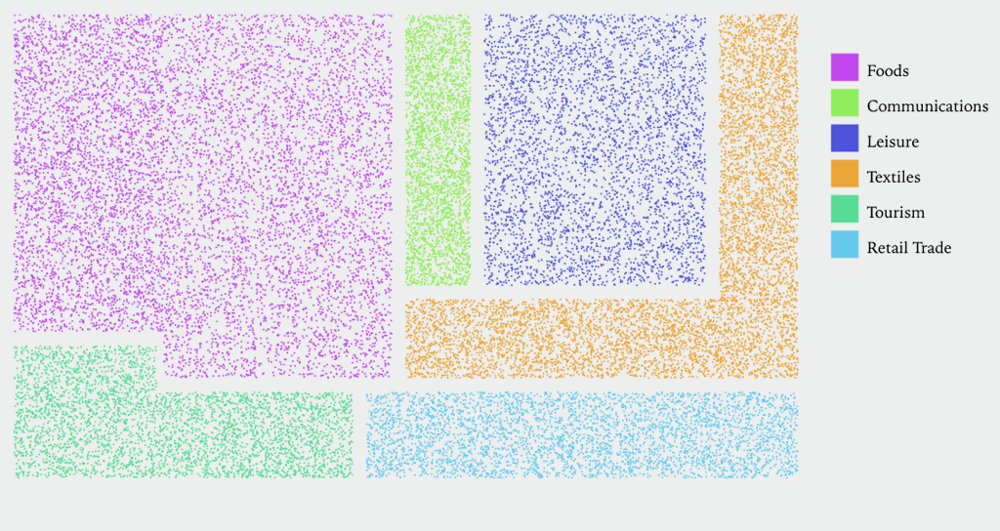

Elizabeth Borneman and Christine Langston
Cities are at the forefront of migration dynamics. They not only influence immigrants’ well-being and assimilation, but are also strongly influenced by immigrants. Immigrants themselves can be key players in a city’s culture, development, and livability for anyone in the city, as well as for future immigrants.
The United Nations Development Program (UNDP) ranked Miami, FL first in terms of its percentage of foreign-born residents at 59% (World Population Review). Miami is a vibrant example of a city in which immigrants shape and contribute to cultural richness and social activity. Socio-cultural diversity and the creative class are key aspects determining city livability, so we set out to visualize measures of cultural heritage across Miami (Takahashi et. al).
We focus on languages as vehicles through which intangible cultural heritage (IHC) is expressed and transmitted, with language statistics providing a way of understanding the social and natural environment of given cultural groups. Through visualizing/examining language we can capture various cultural domains across Miami: Performance and Celebration, Visual Arts and Crafts, Books and Press, Design and Creative Services, and Tourism.
According to the UN Principles and Recommendations on Population and Housing Censuses (UN, 2007), we can measure IHC using data on the usual language most often spoken by individuals in the home.
Each shape represents the proportion of speakers within MIami’s total population, who primarily speak one of the top 7 languages (Spanish, Creole, French (incl Patois), Portuguese, Russian, and Chinese, and English) at home. We ranked these 7 languages by absolute number of speakers in Miami Dade County (US Census Bureau 2013).
Here we show how the top languages are distributed across Miami, highlighting pockets of the city where high percentages of people speak a particular language.
Next, we set out to study language vitality trends and use over time in Miami. We break each language down into cultural search terms about holidays, festivals, traditional music, and specialty foods popular across linguistically distinct communities in Miami. We compiled this dataset of cultural terms from Miami-based articles and websites that covered events, festivities, stores, and neighborhoods where one might come into contact with a specific community’s food, celebrations, or art, for example.
Those sites include: Hispanic Heritage Month Event Site (Spanish), Cultural Center Websites (Russian), Cultural Film Festival Sites (Portuguese), Miami Arts and Culture Sites (Little Haiti), Miami Holidays and Festival sites, Miami Tourism Sites, and Miami Herald Cultural Opinion articles.
Below is the prevalance of search terms on Google over time, which we can use as an indication of what is actually being talked about in Miami.
We chose to look into 6 main languages based on number of speakers in Miami: Spanish, French, Creole, Russian, Chinese, and Portuguese
Looking ahead, we would to complete more journalistic research to identify economic cultural sites in Miami such as restaurants, specialty shops, and community centers where one might come into contact with the various cultural products, activities and celebrations found on our cultural search term visualization. Below we show a proportional break down of small businesses with foreign born owners across the US, by cultural industry.
Our data sources included the following:
Our research data sources:
Articles for Language Terms: